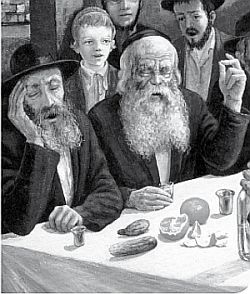

מה ההבדל בין השיטה הסוציאליסטית לבין השיטה הדמוקרטית, וכיצד הסוציאליזם מותאם יפה
מה ההבדל בין השיטה הסוציאליסטית לבין השיטה הדמוקרטית, וכיצד הסוציאליזם מותאם יפה לפרשת ויקהל, בעוד שהדמוקרטיה תואמת לרעיון של פרשת פקודי? ולמה חיילי הצאר חרפו נפשם לקפוץ למים ולמות? • על כך ועוד, בהתוועדות חסידותית לשבת פרשת ויקהל–שקלים
מה ההבדל בין השיטה הסוציאליסטית לבין השיטה הדמוקרטית, וכיצד הסוציאליזם מותאם יפה לפרשת ויקהל, בעוד שהדמוקרטיה תואמת לרעיון של פרשת פקודי? ולמה חיילי הצאר חרפו נפשם לקפוץ למים ולמות? • על כך ועוד, בהתוועדות חסידותית לשבת פרשת ויקהל–שקלים

פעם נפגשו שלושה מלכים והתווכחו ביניהם למי מהם חיילים טובים ומסורים ביותר. הסכימו השלושה שכל אחד יקרא לחייל מצבאו ויצווה עליו לקפוץ מן החלון של הקומה העשירית, ולפי ההיענות של החיילים יוכלו לראות מי החייל הנאמן ביותר.
קרא המלך האנגלי לאחד מחייליו וציווה עליו לעלות לקומה העשירית ולקפוץ מן החלון. התחיל החייל לבכות: “מה חטאתי למלך ולמה המלך רוצה להרוג אותי. אנא סלח ומחל לי וותר לי. יש לי אשה וילדים”. חפו פני המלך שהפסיד בהתערבות.
הגיע תורו של המלך הצרפתי שקרא לאחד מחייליו וציווה עליו לעלות לקומה העשירית ולקפוץ מן החלון. הגיב החייל: “אדוני המלך. אני מסור אליך בכל נימי נפשי עד טיפת הדם האחרונה. אני מוכן למסור את כל חיי עבור המלך. אבל רוצה אני לדעת מה יהיה למלך מזה שאני אקפוץ מהחלון אל המוות”. חפו גם פני המלך הצרפתי וגם הוא הפסיד בהתערבות.
הגיע תורו של הצאר הרוסי שקרא לאחד מחייליו וציווה עליו לעלות לקומה העשירית ולקפוץ מן החלון. הגיב החייל בהתלהבות: “אדוני המלך. אני רץ בשמחה למסור למלך את כל חיי. רק תגיד לי מאיזה חלון עלי לקפוץ”.
סיפור זה - ספק היה ספק לא היה - סיפרו חסידים שהוסיפו כי זהו הפירוש בפסוק “אנה ה’ כי אני עבדך” - לא כתוב כאן “אנא” בא’, שפירושו בבקשה, אלא “אנה” בה’, שפירושו לאן, והפירוש הוא “אנה” - מאיזה חלון עלי לקפוץ - “כי אני עבדך”.
על דרך זה היה המשפיע ר’ מענדל פוטרפס מספר על אודות חיילי הצאר ניקולאי סיפור שהיה נשמע לא מציאותי, אך הוא היטיב לתאר מה פירושה של מסירות מוחלטת עבור המלך: היה פעם גשר מעל הנהר שעליו היה צריך לעבור הצאר ניקולאי, אך הוא נשבר. חיילי ניקולאי ששמעו זאת, לא עשו חשבונות וכל גדוד החיילים קפץ למים. כך הנהר הלך והתמלא בגופות חיילים שורה על–גבי שורה כדי שייווצר גשר עליו יוכלו להניח קורות שעליהם יעבור הצאר בבטחה.
ר’ מענדל הוסיף עוד יותר, שאף–אחד מן החיילים לא ביקש כלל להיות דווקא בשורה העליונה ביודעו ששם יש סיכוי להיוותר בחיים. כי כשמדובר בענין הנוגע למלך, אזי אני אינני קיים ולא תופס מקום.
בגשמיות קשה לנו להבין מסירות נפש כה מוחלטת, אבל בנמשל, כלפי מלך מלכי המלכים הקב”ה, זהו בהחלט מה שנדרש מאתנו - להיות מוכן בכל רגע לתת את החיים ואת כל המציאות הגשמית והרוחנית שלנו עבור מלך מלכי המלכים הקב”ה, ועבור “הנשיא הוא הכל”, שעל ידו מגלה הקב”ה את עצמו בקרבנו (שיחת ש”פ שופטים תנש”א).
וכפי הסיפור הידוע שהרבי ה”צמח צדק” נתן לנכדו אדמו”ר הרש”ב, בהיותו ילד קטן, מטבע של חצי רובל, ואמר לו: זהו “מחצית–השקל”. ה”צדיק” הוא המרכז (כשם שהאות צ’ היא במרכז המילה “מחצית”), וכל הקרוב אליו הוא “חי” (כשם שהאותיות הקרובות ל”צ” במילה “מחצית” הם האותיות “חי”) וכל הרחוק ממנו הוא היפך החיים (כשם שהאותיות הרחוקות מן ה”צ” במילה “מחצית” הם האותיות “מת”). כי רק על ידי ההתקשרות והביטול המוחלט אל הצדיק אפשר להתבטל ולהתאחד באמת עם הקב”ה ועם עוד יהודי ולחיות באמת בחיות אלוקית.
סוציאליזם או דמוקרטיה?
לפני שבועות אחדים הבאנו במסגרת זו את דברי הרבי מלך המשיח שליט”א באחת ההתוועדויות הגדולות, על אודות ההבדל בין שיטת הקומוניזם והסוציאליזם לבין שיטת הדמוקרטיה. הרבי סיפר אז סיפור מאדמו”ר הריי”צ נ”ע, מהתקופה בה רעש העולם מהמהפכות האדירות שהתרחשו אז בכל רחבי תבל. כאשר הויכוח בין השיטות השונות הפך למלחמות גדולות שבהן נהרגו אנשים רבים. הרבי הריי”צ נסע אז ברכבת, והיו שם יהודים שהתווכחו ביניהם בלהט מהי שיטת התורה בניהול העולם - האם על פי התורה יש לנהל את העולם על יסודות הסוציאליזם והקומוניזם, או על יסודות הדמוקרטיה. החליטו ביניהם לשאול את פי הרבי הריי”צ מהי שיטת התורה.
הרבי חייך וענה להם: “כל השיטות שהן מעשי ידי–אדם הינן מעורבות מטוב ורע. החלק הטוב שבכל אחת מן השיטות נלקח מן התורה, שרק היא טוב אלוקי מוחלט, תורת–אמת ותורת–חיים”.
מסיפור זה, שהטוב שבכל שיטה נלקח מן התורה, מובן, אמר הרבי שליט”א, שיכולים אנו ללמוד מכל אחת מן השיטות הללו הוראה בעבודת ה’.
והרבי הסביר: ההבדל הכללי שבין הסוציאליזם לדמוקרטיה, הוא שבסוציאליזם ניתן הדגש בעיקר על הציבור והכלל. האדם הבודד צריך לבטל את מציאותו הפרטית אל הציבור והכלל. לדעת שהוא אינו אלא ‘בורג קטן בתוך המכונה הגדולה’ (כפי שהייתה אז סיסמתם של הקומוניסטים) של הציבור והכלל. עליו להתמסר לגמרי ולבטל כליל את ה”אני” הפרטי שלו, לטובת ה”אני” הגדול של הכלל - לטובת העם, הממשלה, המפלגה, המדינה וכדומה. לפיכך עליו להתאים את כל הנהגתו שתהיה כולה לא לפי מה שהוא רוצה והוא צריך כשלעצמו, אלא אך ורק בהתאם למה שדרוש לטובת הציבור והכלל. בהתאם לצרכים הכלליים של העם והמדינה ייקבעו גם צרכיו הפרטיים של כל יחיד, אותם תספק הממשלה והמדינה במידה שווה לכל השותפים.
בדמוקרטיה, לעומת זאת, ניתן הדגש דווקא על היחיד והפרט. אמנם כל אחד מחויב להטות שכם ולעמול גם לטובת הציבור כולו, אבל ההדגשה העיקרית היא על העובדה שהציבור כולו מורכב מיחידים ובודדים. תפקידו העיקרי של הציבור הוא לעזור ולסייע לכל פרט ולכל יחיד לפתח את עצמו ולנהוג כרצונו בחופשיות גמורה. כך נולדו המושגים ‘חופש הפרט’, ‘חופש המצפון’, ‘חופש הפולחן’, ‘חופש הביטוי’ וכיוצא בזה. יסוד זה של הדמוקרטיה, אמר אז הרבי, בא לידי ביטוי בסיסמה הכתובה בלטינית על הדולר, שפירושה הוא - “כולם בשביל האחד”.
הרבי למד הוראה בעבודת ה’ משתי השיטות, שגם בעבודת ה’ ישנן שתי נקודות אלו: מיהודי נדרש קודם כל, ובפרט על–פי תורת החסידות, לבטל את עצמו מכל וכל. לא לחשוב על עצמו כלל וכלל. לדעת שאין הוא אלא שליח, עבד, וחייל, שכל מטרתו וכל חייו אך ורק למלא את רצונו של בורא העולם ומנהיגו. עליו לשים הצידה את כל מאווייו ורצונותיו הפרטיים; לא להתחשב במה שהוא רוצה או לא רוצה, מבין או לא מבין, אוהב או לא אוהב. אלא לתת לה’ את כל מציאותו ומהותו ולהתבטל לגמרי אל הנקודה, אל העצם, שלמעלה מהכל.
אבל יחד עם זאת מדגישה התורה גם לאידך, שלאחר הביטול המוחלט, “חייב אדם לומר בשבילי נברא העולם”. יהודי אינו רק ‘בורג קטן בתוך המכונה הגדולה’ או סתם–חייל שמביא את הניצחון למלכו. יחד עם הביטול הגדול והמוחלט הנדרש מיהודי, מדגישה התורה ש”בנים אתם לה’ אלוקיכם”. ובן מלך, גם כשהוא מתמסר כל–כולו לאביו, אינו רק משרת כדי להביא את התכלית הדרושה לאביו המלך. אלא גם בו עצמו יש תכלית ומטרה עצמית, שקשורה ומאוחדת עם מציאות המלך עצמו. המלך חושב עליו אישית ורוצה במציאותו ובטובתו, כי מציאותו היא בעצם מציאות המלך.
בין “ויקהל” ל”פקודי”
זוהי בעצם הנקודה של ההתוועדות האחרונה לעת עתה, בה זכינו לשמוע דברי אלוקים חיים מפי הרבי מלך המשיח - שבת פרשת ויקהל–שקלים תשנ”ב. אם לכל השיחות ששמענו מהרבי בשנה האחרונה לעת עתה ישנה חשיבות מיוחדת, ולכן ראוי וצריך ללמוד את השיחה הזאת שוב ושוב ולחיות עמה.
התוועדות זו הייתה מלאה רגש. היו בה דיבורים לבביים מאד על אודות אהבת כל יהודי ואחדות עם כל יהודי, הסתכלות עליו רק בעין טובה, ודיבור עמו ועל אודותיו רק באופן חיובי ואוהב. ואפילו דברי מוסר אין לומר לו אלא רק לעתים רחוקות, ואך ורק בדרכי נועם ובדרכי שלום, וזאת רק לאחר שמרגישים אליו אהבה עצמית ממש כמו אב ובן. זוהי העבודה עתה, להתאחד עם היהודי שעומד לידו, למזוג לו “לחיים” ולהסתכל עליו אך ורק בעין טובה.
נקודה נוספת שעליה דיבר הרבי בהתוועדות, היא ההבדל בין “ויקהל” לבין “פקודי” בסימבוליות לפי השם:
“ויקהל” הוא ביטול כל הפרטים והקהלתם אל הנקודה. אי התחשבות בפרטים ובגדרים המיוחדים של כל אחד. שלילת המציאות והייחודיות של כל אחד לטובת הנקודה המרכזית - עצמותו יתברך. במדרגה זו “אני לא נבראתי (אין לי שום מציאות כלל וכלל, אלא אך ורק) לשמש את קוני”.
“פקודי”, לעומת זאת, מדגישה את העובדה שסופרים כל פרט ופרט ומדגישים את הייחודיות והמיוחדות שבו, כדי לנצלם לעבודת ה’. שאז אמנם חודרים יותר בתוך העולם, אבל לא מגיעים כל כך “אליו יתברך”, אלא רק אל מדרגת האלקות ששייכת להאיר בעולם. במדרגה זו “אני נבראתי (אני כן מציאות לעצמי, אלא שיש לי תכלית, כדי) לשמש את קוני”.
באותן השנים שקוראים את “ויקהל–פקודי” ביחד, אזי מודגש ש”ויקהל” היא רק הכנה ל”פקודי”. שהם רק כמו כלל ופרט, שאין בכלל אלא מה שבפרט ואין בפרט אלא מה שבכלל.
אולם כאשר קוראים את “ויקהל” בפני עצמה (ומזה לוקחים את ההוראה גם לשנים שקוראים אותם יחד, כיוון שהתורה כולה היא נצחית וכל ענין בתורה הוא הוראה לתמיד) מודגשת כאן העבודה של “ויקהל” לחוד - לא להתחשב בפרטים ובגדרים של העולם. לשלול ולבטל ולהקהיל את הכל אל הנקודה, אל העצם שלמעלה מהכל.
ולכן קוראים אז את פרשת שקלים דווקא עם “ויקהל” (ולא עם “פקודי”) - משום שגם תוכנה ועניינה של פרשת שקלים הוא: לא לתת דבר שלם, אלא דווקא “מחצית”. ואף שהשווי של מחצית זו הוא “עשר גרה”, אך התורה לא מזכירה את מספר עשר המורה על השלמות, אלא מדגישה “עשרים גרה השקל (ואתה תתן רק חצי מזה) מחצית השקל תרומה לה’”. והיינו שכאן לא מודגשת השלימות של הפרטים והגדרים, אלא דווקא העניין של “מחצית”, שאף אחד ושום דבר אינו שלם ואינו מציאות כלל, עד שלא יתבטל ויתאחד לגמרי עם הקב”ה, ובגלל זה גם יתבטל ויתאחד עם עוד יהודי.
כלומר, עניינה של “ויקהל–שקלים” הוא הביטול בתכלית והיציאה וההתרוממות לגמרי למעלה מן העולם. אל הנקודה, אל העצם, שלמעלה מהכל.
מאידך, התוכן של “פקודי” הוא להיפך. לא לשלול את הפרטים ולבטל ולהקהיל אותם אל העצם ואל הנקודה, אלא לספור כל פרט לחוד ולנצל את תוכנו ועניינו המיוחד בשלמות לאלקות. להכניס את האלקות לתוך מציאותו של העולם. שהמציאות עצמה (לא רק תתבטל לאלקות, אלא) תהי’ בעצמה אלקות.
וכאשר “פקודי”, שתוכנה ועניינה הוא להכניס את האלקות דווקא לתוך מציאות העולם, באה אחרי “ויקהל”, שתוכנה ועניינה הוא לשלול ולבטל לגמרי את העולם אל האלקות - אזי מודגש כאן שצריך להכניס את כל ה”עצם” שהי’ ב”ויקהל” - אל תוכם של כל פרטי וגדרי העולם.
ולהעיר שנקודה זו מודגשת במיוחד בשנים שקוראים את “פקודי” יחד עם “שקלים”, כמו השנה. כי כאשר קוראים את “ויקהל” עם “שקלים” כמו בשנת תשנ”ב, הרי בפרשת “ויקהל–שקלים” מודגשת רק העלי’ וההתרוממות מעלה מעלה. ואילו ב”פקודי” מודגשת רק הירידה וההמשכה מטה מטה. אולם כאשר קוראים את “פקודי”, שתוכנה ועניינה הוא להכניס את האלקות דווקא לתוך מציאות העולם, יחד עם “שקלים”, שתוכנה ועניינה הוא השלילה והביטול אל הנקודה והעצם, אזי מודגש במיוחד שצריך להכניס את כל הנקודה והעצם שלמעלה מהכל (המודגש בפרשת שקלים) - דווקא בתוך מציאות העולם.
[ובדרך הרמז אולי אפשר לומר שבשנת תשנ”ב הי’ התוכן “ויקהל–שקלים” - שבשניהם מודגשת ההתרוממות למעלה מהעולם, כפי שהי’ בז”ך אדר תשנ”ב ותשנ”ד (כשהרבי שליט”א קיבל את האירוע הבריאותי)].
אולם עתה, בשנת תשע”ד, אחרי כל מה שעברנו מאז, מגיעים לכך שהעצם והנקודה לא נשארים למעלה, אלא נמצאים דווקא באופן של “פקודי”, דווקא בתוך מציאות העולם, בהתגלות המלאה לעיני כל תיכף ומיד ממש.
“יחי אדוננו מורנו ורבינו מלך המשיח לעולם ועד”.